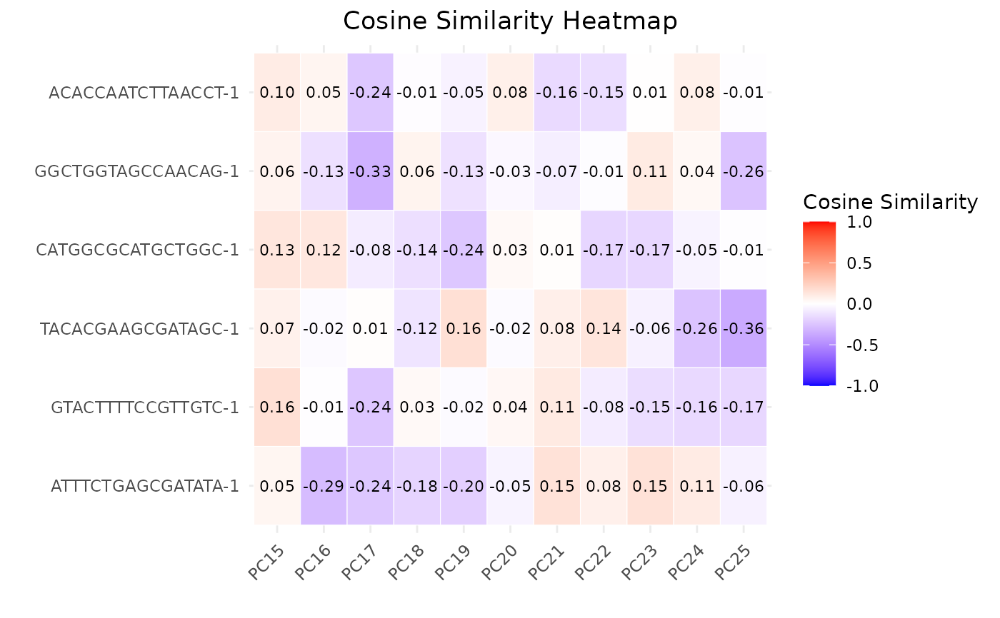

R/calculateCellSimilarityPCA.R, R/plot.calculateCellSimilarityPCAObject.R
calculateCellSimilarityPCA.RdThis function calculates the cosine similarity between cells based on the principal components (PCs) obtained from PCA (Principal Component Analysis) loadings.
The S3 plot method creates a heatmap plot to visualize the cosine similarities between cells and principal components (PCs).
calculateCellSimilarityPCA(
sce_object,
cell_names,
pc_subset = 1:5,
n_top_vars = 50,
assay_name = "logcounts"
)
# S3 method for class 'calculateCellSimilarityPCAObject'
plot(x, pc_subset = 1:5, ...)A SingleCellExperiment object containing expression data.
A character vector specifying the cell names for which to compute the similarity.
A numeric vector specifying the subset of principal components to include in the plot. Default is 1:5.
An integer indicating the number of top loading variables to consider for each PC. Default is 50.
Name of the assay on which to perform computations. Default is "logcounts".
An object of class `calculateCellSimilarityPCA` containing a dataframe of cosine similarity values between cells and PCs.
Additional arguments passed to the plotting function.
A data frame containing cosine similarity values between cells for each selected principal component.
The S3 plot method returns a ggplot object representing the cosine similarity heatmap.
This function calculates the cosine similarity between cells based on the loadings of the selected
principal components obtained from PCA. It extracts the rotation matrix from the PCA results of the
SingleCellExperiment object and identifies the high-loading variables for each selected PC.
Then, it computes the cosine similarity between cells using the high-loading variables for each PC.
The S3 plot method reshapes the input data frame to create a long format suitable for plotting as a heatmap. It then creates a heatmap plot using ggplot2, where the x-axis represents the PCs, the y-axis represents the cells, and the color intensity represents the cosine similarity values.
plot.calculateCellSimilarityPCAObject
calculateCellSimilarityPCA
# Load data
data("reference_data")
data("query_data")
# Store PCA anomaly data and plots
anomaly_output <- detectAnomaly(reference_data = reference_data,
query_data = query_data,
ref_cell_type_col = "expert_annotation",
query_cell_type_col = "SingleR_annotation",
pc_subset = 1:10,
n_tree = 500,
anomaly_threshold = 0.5)
top6_anomalies <- names(sort(anomaly_output$Combined$reference_anomaly_scores,
decreasing = TRUE)[1:6])
# Compute cosine similarity between anomalies and top PCs
cosine_similarities <- calculateCellSimilarityPCA(reference_data,
cell_names = top6_anomalies,
pc_subset = 1:25,
n_top_vars = 50)
cosine_similarities
#> PC1 PC2 PC3 PC4 PC5
#> ACACCAATCTTAACCT-1 -0.4339110 0.09963651 0.3110854 -0.08549224 -0.4661250
#> GGCTGGTAGCCAACAG-1 -0.1681258 0.11032005 -0.3459655 0.12366785 -0.4343250
#> CATGGCGCATGCTGGC-1 -0.4543269 -0.13915218 -0.1297861 0.42427682 -0.4812924
#> TACACGAAGCGATAGC-1 0.1963692 0.35033672 0.3592792 0.26904778 -0.3701442
#> GTACTTTTCCGTTGTC-1 -0.1021777 0.31110592 0.2177546 0.18410164 0.1572341
#> ATTTCTGAGCGATATA-1 -0.1511318 0.35997557 -0.3094156 0.25524359 -0.4173836
#> PC6 PC7 PC8 PC9 PC10
#> ACACCAATCTTAACCT-1 0.08965511 -0.28471345 -0.03848145 -0.02509098 0.1984070
#> GGCTGGTAGCCAACAG-1 -0.44398087 0.44270822 0.20765271 0.32789078 -0.2897046
#> CATGGCGCATGCTGGC-1 -0.03646835 -0.27812421 -0.06673205 0.03553433 0.4146546
#> TACACGAAGCGATAGC-1 -0.04491305 -0.13313434 -0.22034812 -0.03196268 0.3863550
#> GTACTTTTCCGTTGTC-1 0.34378011 -0.04846996 0.15205252 -0.06588815 0.1151667
#> ATTTCTGAGCGATATA-1 -0.43443550 0.50350174 0.18993881 0.23150141 -0.2185454
#> PC11 PC12 PC13 PC14 PC15
#> ACACCAATCTTAACCT-1 -0.4923395 0.17826466 -0.3202226875 0.312132975 0.09964316
#> GGCTGGTAGCCAACAG-1 -0.2087768 0.06268242 -0.0026756314 -0.030647911 0.06246700
#> CATGGCGCATGCTGGC-1 -0.2411911 0.22173854 -0.3039888814 0.049363044 0.12935983
#> TACACGAAGCGATAGC-1 -0.5287059 0.18751592 -0.4558131990 0.108185967 0.07114757
#> GTACTTTTCCGTTGTC-1 -0.2177147 0.31268091 -0.3460231683 0.139152955 0.16349138
#> ATTTCTGAGCGATATA-1 -0.2233703 -0.01592932 -0.0002387811 0.004114576 0.04984666
#> PC16 PC17 PC18 PC19 PC20
#> ACACCAATCTTAACCT-1 0.05174298 -0.24119214 -0.01087895 -0.05486866 0.08136207
#> GGCTGGTAGCCAACAG-1 -0.13249124 -0.33300045 0.06014086 -0.12756236 -0.03290126
#> CATGGCGCATGCTGGC-1 0.12436648 -0.08177501 -0.13639314 -0.24033899 0.03036031
#> TACACGAAGCGATAGC-1 -0.02257555 0.01167362 -0.11506239 0.16164452 -0.02227341
#> GTACTTTTCCGTTGTC-1 -0.01026400 -0.24160362 0.03110863 -0.02319528 0.03991881
#> ATTTCTGAGCGATATA-1 -0.28777554 -0.24104826 -0.18234860 -0.20402436 -0.05224256
#> PC21 PC22 PC23 PC24
#> ACACCAATCTTAACCT-1 -0.156645637 -0.14554951 0.005130638 0.07969460
#> GGCTGGTAGCCAACAG-1 -0.071622295 -0.01272424 0.107414773 0.03822655
#> CATGGCGCATGCTGGC-1 0.009631735 -0.17322741 -0.170650549 -0.04994796
#> TACACGAAGCGATAGC-1 0.081428923 0.13620682 -0.059127447 -0.25641630
#> GTACTTTTCCGTTGTC-1 0.111535403 -0.08143938 -0.145467961 -0.16016327
#> ATTTCTGAGCGATATA-1 0.151709760 0.07784683 0.151823195 0.10532229
#> PC25
#> ACACCAATCTTAACCT-1 -0.007756465
#> GGCTGGTAGCCAACAG-1 -0.255064083
#> CATGGCGCATGCTGGC-1 -0.010528870
#> TACACGAAGCGATAGC-1 -0.363066721
#> GTACTTTTCCGTTGTC-1 -0.168503144
#> ATTTCTGAGCGATATA-1 -0.061325483
#> attr(,"class")
#> [1] "matrix" "array"
#> [3] "calculateCellSimilarityPCAObject"
# Plot similarities
plot(cosine_similarities, pc_subset = 15:25)
